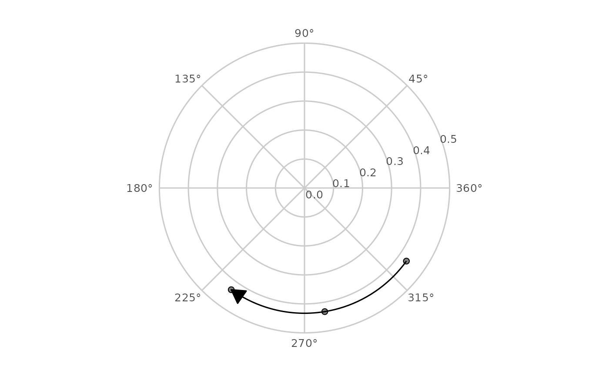

Draw a profile's movement across occasions in circumplex space
Source:R/geom_ssm.R
geom_ssm_path.RdA ggplot2 layer that connects a profile's successive positions on a
circumplex canvas built with coord_circumplex() (for example the canvas
from ggcircumplex()), so change in amplitude and displacement reads as
movement through circumplex space. Each segment is curved along the polar
geodesic by the coordinate system, which owns the transform; the layer owns
the ordering, the 0/360 seam handling, and the optional arrowheads.
Usage
geom_ssm_path(
mapping = NULL,
data = NULL,
stat = "identity",
position = "identity",
...,
arrow = NULL,
na.rm = TRUE,
show.legend = NA,
inherit.aes = TRUE
)Arguments
- mapping, data, stat, position, show.legend, inherit.aes, ...
Standard ggplot2 layer arguments.
mappingmust supply theamplitudeanddisplacementaesthetics.- arrow
An arrow specification produced by
ggplot2::arrow(), orNULL(the default) for a path drawn without arrowheads. Arrowheads mark the direction of time along the path.- na.rm
If
FALSE, warn when occasions with no location are removed from the ends of a path; ifTRUE(the default) remove them silently. Occasions with no location in the middle of a path break it either way.
Details
Points are connected in the order the rows appear in the data, exactly as
ggplot2::geom_path() does, and the group aesthetic separates one series
from another. Sort the data into time order before plotting: an occasion
label sorted as text puts T10 before T2, which silently reverses time.
ssm_plot_circle(path = TRUE) does this sorting for you, taking the order
from the object's own occasion list.
Consecutive occasions are joined the short way around the circle. The
displacements of each group are unwrapped onto a continuous branch before the
coordinate system sees them, so a step from 350 to 10 degrees is drawn as
the 20 degree arc across the pole rather than a 340 degree sweep the long way
round. Unwrapped values may therefore fall outside [0, 360). This assumes
the profile rotates less than a half-turn between consecutive occasions at
which its displacement is defined; no data can verify that, so widely spaced
occasions should be read with it in mind.
An occasion with no defined location – a flat or zero-amplitude profile, whose displacement is undefined – breaks the path rather than being interpolated through, and the segment after the gap is still drawn on the correct branch. Non-finite amplitudes and displacements are treated the same way, since an infinite angle names no position on the circle.
See also
Other circumplex layers:
coord_circumplex(),
geom_ssm_arc(),
geom_ssm_point(),
ggcircumplex(),
scale_x_circumplex(),
theme_circumplex()
Examples
data("jz2017")
scales <- c("PA", "BC", "DE", "FG", "HI", "JK", "LM", "NO")
# Three occasions that actually move: shifting the octant scores by one
# position rotates the fitted profile by 45 degrees per occasion.
waves <- lapply(1:3, function(k) {
idx <- ((seq_along(scales) - 1 + (k - 1)) %% length(scales)) + 1
d <- jz2017[, scales[idx]]
names(d) <- scales
d$id <- seq_len(nrow(d))
d$occasion <- paste0("T", k)
d
})
res <- ssm_analyze_long(do.call(rbind, waves),
scales = scales, id = "id", occasion = "occasion"
)
ggcircumplex(octants(), amax = 0.5) +
geom_ssm_point(
data = res$results,
mapping = ggplot2::aes(amplitude = a_est, displacement = d_est),
size = 2
) +
geom_ssm_path(
data = res$results,
mapping = ggplot2::aes(amplitude = a_est, displacement = d_est),
arrow = ggplot2::arrow(
length = ggplot2::unit(0.18, "inches"), type = "closed"
)
)
